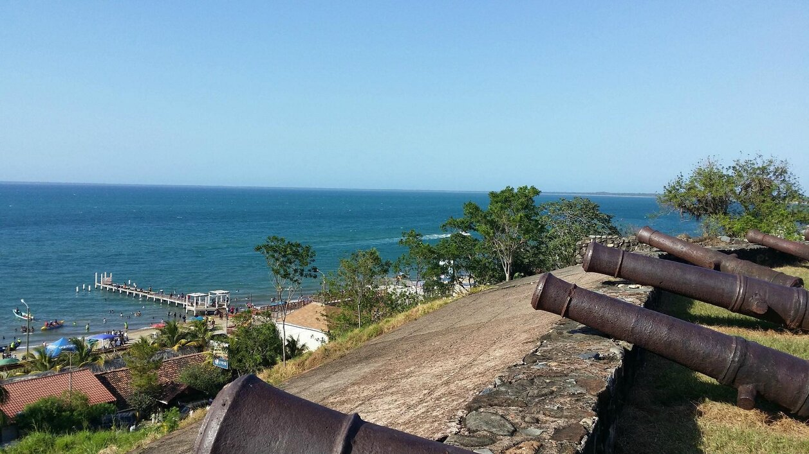

Trujillo (Colón)

Trujillo es una ciudad ubicada en el norte de Honduras, en la costa del Caribe. Es una ciudad portuaria importante y es considerada una de las ciudades más importantes de Honduras en términos económicos. Además de ser un centro comercial y de transporte, Colón tiene muchas atracciones turísticas para visitantes.
Una de las principales atracciones turísticas de Trujillo es el Fuerte de Santa BArbara, que fue construido en el siglo XVIII para proteger la ciudad de los ataques piratas. El fuerte ha sido restaurado y es ahora un museo que muestra la historia y la cultura de la región. También hay un faro en el lugar que ofrece vistas impresionantes del mar Caribe y la ciudad.

Otra atracción turística importante en Colón es el Parque Nacional Capiro y Calentura, que es un bosque tropical protegido. El parque cuenta con senderos para caminatas, cascadas, ríos y una gran variedad de animales y plantas. Es un gran lugar para hacer turismo ecológico y experimentar la naturaleza de Honduras.
La ciudad de Trujillo también tiene una gran cantidad de playas hermosas, como la Playa de los Micos, Playa Blanca y Playa Palma Real. Estas playas tienen arenas blancas y aguas cristalinas, ideales para practicar deportes acuáticos como el surf y el snorkel. También hay tours en lancha para visitar las islas cercanas, como la Isla del Tigre, que tiene una hermosa playa y una variedad de vida marina.
Otras actividades populares
- Visitar el Mercado Municipal, donde puedes encontrar una gran variedad de productos locales y probar la comida típica de Honduras.
- Hacer un recorrido por la ciudad para conocer la arquitectura colonial y la historia de Colón.
- Visitar el Zoológico Joya Grande, que cuenta con una gran cantidad de animales y plantas nativas de Honduras.
- Hacer una excursión en bote por el Río Plátano, que es uno de los ríos más largos de Honduras y está rodeado de una exuberante vegetación tropical.
- Ir al Centro de Entretenimiento y Diversión Marina del Sur, donde hay una variedad de juegos mecánicos, restaurantes y tiendas.